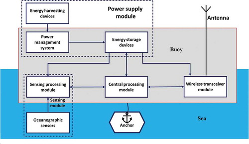

Go to Food Safety
Go to Ocean monitoring

It is known that a large amount of food is wasted every year. Although the quantity of the food being wasted is truly shocking, the environmental impacts it has is also very crucial. The amount of water that is used to cook the food that is being wasted is sufficient for the needs of a large population. Also, these food wastes end up in landfill, where it decomposes without oxygen which results in the emission of methane, which is much more harmful than carbon dioxide. To sum up, food waste is one of the major culprits in destroying the environment. There needs to be ways to distribute and store the food that is left out efficiently. Sensors can be implemented to monitor and control the food temperature in the trucks used for the transportation, these sensors electronically measure and record temperatures allowing users to keep track of it consistently. IoT also offers predictive maintenance which allows users to know when the battery life of monitors is low. There was research conducted based on this in 2015 and the results they got were really encouraging. Hence, using sensors in transportation and storage of food helps in many ways to the people and the environment. (Ayaz et al.,2019)
In an Iot based ocean monitoring, different types of sensors can be implemented at random parts of the sea water to calculate both physical and chemical attributes like the pH, temperature, pressure, salinity, turbidity, oxygen, density velocity of wind and the level of chlorophyll in the water. These randomly arranged sensors collect data through their nodes, which are then transferred to the host node. There are endless varieties of sensors created in this world for their corresponding purposes - among them, the sea water quality is monitored by the physical, chemical and biological sensors. The protection of the marine environment is the goal of ocean monitoring. IoT has enabled us to come up with the most novel approaches to the design, deployment, and application of several innovative monitoring technologies in the marine environmental world. The use of wireless sensors has created a magical turning point in the data collection for ocean conservation. (Vo et al., 2021)
To sum up, the Internet of Things(IoT) has a lot of benefits to the environment in many ways, there are many more that are not mentioned in this, such as reducing energy consumption and how it assists humans by developing assistive technologies for disability, dementia, and ageing and about the smart watches which use sensors to track information about health conditions, how sensors implemented in clothing could help calculate the movement and pulse rate of the people and so on. The Internet of Things(IoT) could impact a wide range of sectors and industries, ranging from transportation, monitoring, health, communication, agriculture industry and so on. It is possible to bring a smarter, better and more efficient world by broadening the usage of IoT to a wide variety of areas.